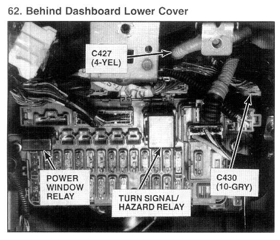

Operation CHARM
: Car repair manuals for everyone.
Home
>>
Acura
>>
1995
>>
Integra (GS-R) L4-1797cc 1.8L DOHC (VTEC)
>>
Repair and Diagnosis
>>
Windows and Glass
>>
Relays and Modules - Windows and Glass
>>
Power Window Relay
>>
Locations
Power Window Relay: Locations

Behind Dashboard Lower Cover - Photo 62